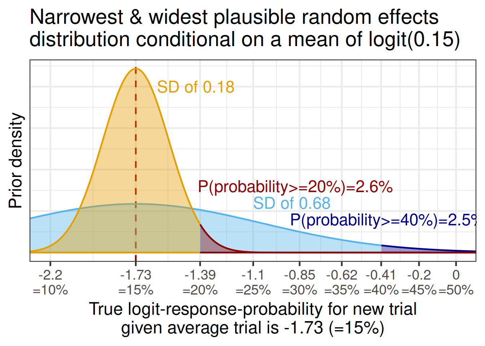
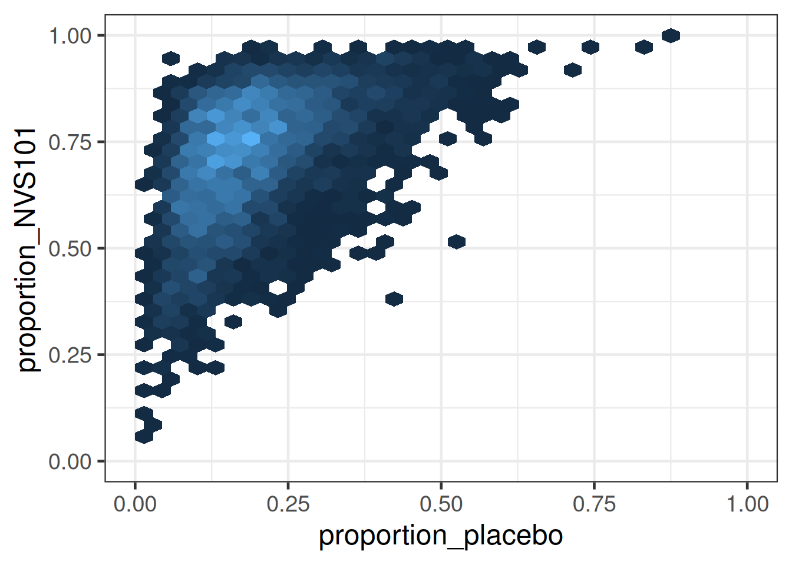
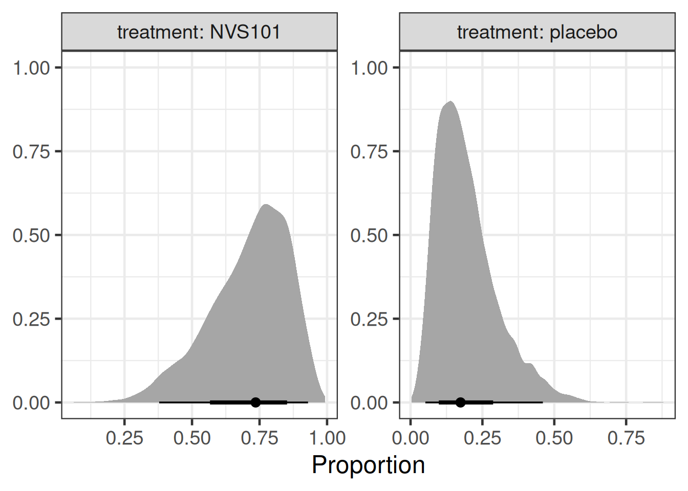
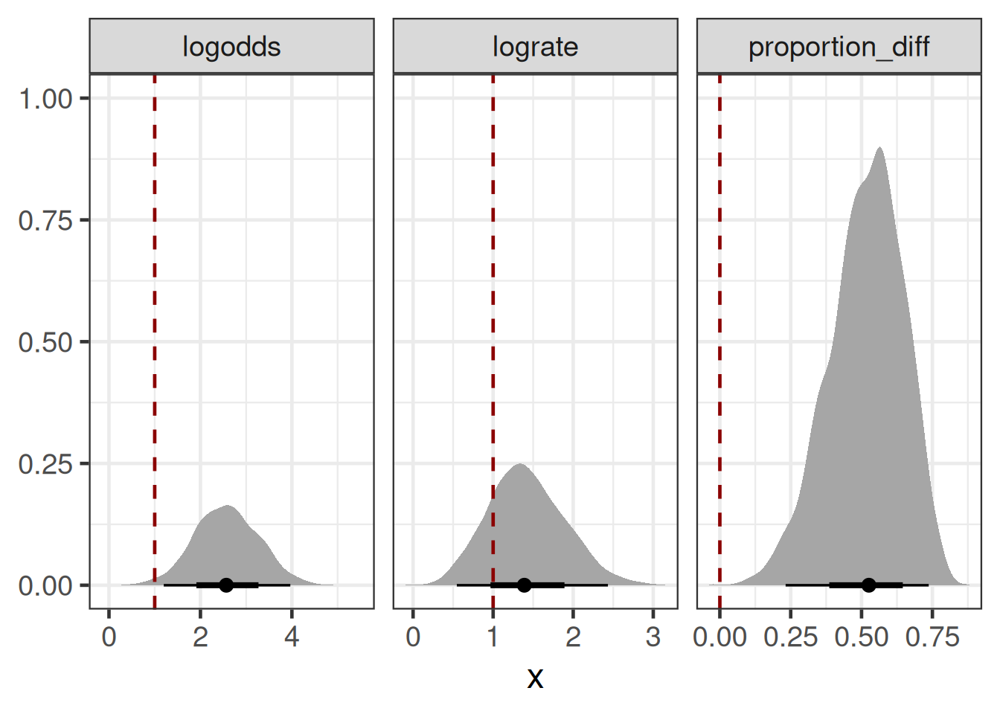

library(tidyverse)
library(brms)
library(RBesT)
library(knitr)
library(gt)
library(ggdist) # Great ggplo2 extension package for visualizing distributions/priors/posteriors
library(distributional) # Defines distribution (that we then use in via ggdist)
library(posterior)
library(here)
# instruct brms to use cmdstanr as backend and cache all Stan binaries
options(brms.backend="cmdstanr", cmdstanr_write_stan_file_dir=here("_brms-cache"))
# create cache directory if not yet available
dir.create(here("_brms-cache"), FALSE)
set.seed(678571)
# default controls args passed to Stan
control_args <- list(adapt_delta=0.99, step_size=0.1)
# nice common ggplot2 theme
theme_set(theme_bw(base_size=18))8 Probability of success from a single arm trial
This case study:
- discusses probability of success for drug development projects (and introduces the related concept of assurance) when the available data come from a single arm trial without a control group
- shows how to specify mixture priors with
brmsusing helper functions from theRBesTpackage such asRBesT::mixnorm()andRBesT::mixstanvar()(used with thestanvarsoption ofbrms::brm() - gives examples of how to choose prior distributions including how to obtain useful visualizations and other helpful information using the
ggdistanddistributionalpackages
To run the R code of this section please ensure to load these libraries first:
8.1 Background
8.1.1 Probability of success
For pharmaceutical companies it is important to realistically assess the probability of success (PoS) for drug development projects. Together with other information and considerations (e.g. costs of trials, projected timelines, unmet need for new therapies for an indication, competitive landscape, …) this allows for informed decision making about things such as which projects to pursue at all and how much at-risk investment to make into each of them.
There are a number of ways to define success for PoS calculations, but at Novartis the definition of success is to get approval meeting a target product profile (TPP). It is assumed that if the drug is approved with a label as good or better than the TPP targets, it will meet an important unmet need for patients, be successful on the market and the sales forecasts (obtained assuming this TPP) would be achieved. The Novartis PoS framework combines industry benchmark information with data on a drug and team assessments of other risks. This is most easily done when we have directly relevant data, e.g. with a Phase 2 study that is very similar (in terms of population, endpoint, duration and treatment groups) to the planned Phase 3 trial(s). On the other hand, this is harder based on a single arm study that differs from Phase 3 (or worse without Phase 2 data).
8.1.2 Assurance
Assurance is a popular related concept to PoS. It describes the probability of a successful trial.
8.1.3 Background of the hypothetical example
A hypothetical drug called NVS101 is already approved as a treatment for some systemic diseases. In a single arm trial in patients with a different systemic disease that leads to anemia, most patients that received NVS101 for 12 weeks were able to achieve an acceptable red blood cell count without needing a blood transfusion. We are now considering to start a pivotal randomized placebo controlled Phase III trial, where the primary endpoint would be having an acceptable red blood cell count without needing a blood transfusion over a 1-year period.
We wish to assess the PoS of such a pivotal study. I.e. the probability to get approval meeting the TPP of an odds ratio of 8.5 (given an assumed placebo responder rate of 15% this corresponds to a targeted 60% for the drug).
8.2 Data
The Novartis PoS framework provides us with a prior for the log-odds ratio of response on drug compared with a placebo given a number of project features. For a drug that is past its first approval (a so-called “life-cycle management” situation) such as NVS101, a TPP target of a odds ratio of 8.5 (given an assumed placebo responder rate of 15% this corresponds to a targeted 60% for the drug), we obtain a mixture prior for the log-odds ratio:
mixture_prior <- RBesT::mixnorm("Null component"=c(0.08289228, 0, 0.91992526),
"TPP component"=c(0.91710772, 2.14006616, 0.91992526))
mixture_prior[,] |>
as_tibble() |>
mutate(Property = c("Mixture weight",
"Mean of mixture component",
"SD of mixture component")) |>
relocate(Property) |>
gt() |>
fmt_number(decimals=3) |>
tab_spanner(columns=c("Null component", "TPP component"),
label="Components of the mixture prior")| Property |
Components of the mixture prior
|
|
|---|---|---|
| Null component | TPP component | |
| Mixture weight | 0.083 | 0.917 |
| Mean of mixture component | 0.000 | 2.140 |
| SD of mixture component | 0.920 | 0.920 |
Novartis associates can obtain this using the Novartis internal pos R package using the pos::benchmark_prior() function and applying the pos::as_rbest_mixnorm() function to the result, which converts the prior to a mixture prior object in the RBesT package.
When we plot this mixture distribution, it looks as follows:
plot(mixture_prior) +
xlab("Log-odds ratio for response\non drug compared with placebo") +
theme(legend.position="bottom")The hypothetical single arm trial data for NVS101 are given below:
nvs101_singlearm <- tibble(trial="NVS101 Proof of Concept",
treatment="NVS101",
`trial duration` = "12 weeks",
responders=8,
patients=10) |>
mutate(proportion=responders/patients,
long_study=0L)
nvs101_singlearm |>
gt() |>
fmt_number(columns="proportion", decimals=2)| trial | treatment | trial duration | responders | patients | proportion | long_study |
|---|---|---|---|---|---|---|
| NVS101 Proof of Concept | NVS101 | 12 weeks | 8 | 10 | 0.80 | 0 |
Let us assume that there has been a placebo controlled Phase 3 trial in this indication for another drug EG-999, but no other trials with the same endpoint. The data for the hypothetical other drug are given below:
eg999_ph3 <- tibble(trial="EG-999 Phase 3",
`trial duration` = "52 weeks",
treatment=c("EG-999", "placebo"),
responders=c(19,2),
patients=c(26, 13)) |>
mutate(proportion=responders/patients,
long_study=1L)
eg999_ph3 |>
gt() |>
fmt_number(columns="proportion", decimals=2)| trial | trial duration | treatment | responders | patients | proportion | long_study |
|---|---|---|---|---|---|---|
| EG-999 Phase 3 | 52 weeks | EG-999 | 19 | 26 | 0.73 | 1 |
| EG-999 Phase 3 | 52 weeks | placebo | 2 | 13 | 0.15 | 1 |
Superficially, this extra information makes the NVS101 single arm data look promising, because the responder proportion on NVS101 is much higher than on placebo and even higher than on the EG-999 active treatment group. However, this is a non-randomized across trial comparison and it is not immediately clear how to quantify the strength of evidence for the efficacy of NVS101.
Since we are not really interested in EG-999, the data we will use from the EG-999 Phase 3 trial will only be the placebo group. Thus, our the data we will use are the following:
our_data <- bind_rows(nvs101_singlearm,
eg999_ph3 |> filter(treatment != "EG-999")) |>
mutate(treatment=factor(treatment, levels=c("placebo", "NVS101")))
our_data |>
gt() |>
fmt_number(columns="proportion", decimals=2)| trial | treatment | trial duration | responders | patients | proportion | long_study |
|---|---|---|---|---|---|---|
| NVS101 Proof of Concept | NVS101 | 12 weeks | 8 | 10 | 0.80 | 0 |
| EG-999 Phase 3 | placebo | 52 weeks | 2 | 13 | 0.15 | 1 |
8.3 Model description
8.3.1 Idea
With this available information and data, what do we do to come to a reasonable belief about the efficacy of NVS101 and the PoS of the drug development project? One approach that is foreseen in the Novartis PoS framework is to conduct an expert elicitation that relies on experts making judgements about the totality of the available evidence.
Another approach is to analyze the available data. However, we do not have direct data on
how NVS101 compares to a placebo group within the same trial (the proof of concept study was a single arm trial),
how much the true placebo group responder proportion varies from trial to trial, and
how much the true responder proportion changes with trial duration (for either NVS101 or placebo).
Thus, we will still require prior judgements on these questions. However, it could be the case that these questions are easier to make judgements about for experts than if we asked them directly about the efficacy of a drug compared with placebo.
8.3.2 Model specification
we first express a mixed effects logistic regression model ignoring whether we have data to tell us something about all model parameters. We assume a binomial outcome \(Y_{ij} \sim \text{Bin}(\pi_{ij}, N_{ij})\) for arm \(j\) of trial \(i\). Our model specifies that
\[\begin{align} \text{logit}(\pi_{ij}) =& \; \beta_0 \\ & + \beta_1 \times 1\{\text{treatment}_{ij} = \text{NVS101}\} \\ & + \beta_2 \times 1\{\text{duration} = \text{52 weeks} \} \\ &+ \beta_3 \times 1\{\text{treatment}_{ij} = \text{NVS101 \& duration} = \text{52 weeks} \} \\ & + \theta_i, \end{align}\]
where \(\theta_i \sim N(0, \tau^2)\) is a random trial effect. Or to express this as a brms-formula:
model_formula <- bf(responders | trials(patients) ~ 1 + treatment + long_study + long_study:treatment + (1 | trial),
# short notation for the rhs of this formula is
# 1 + treatment*long_study + (1 | trial)
center = FALSE,
family = binomial(link="logit"))Note that we use the option center=FALSE here in order to fully control the parametrization of the linear predictor. By default brms centers the design matrix and treats the intercept separately from the remaining covariates. While this is often desirable to do, this is not appropiate in this case where we want to control all details of the model and intend to set priors deliberately.
8.3.3 Specification of prior distributions
Before we saw the EG-999 Phase 3 study, what might we have believed about the placebo group of such a study? To answer this might be a time consuming process that may require a review of the available literature and/or eliciting the judgements of experts. Conveniently, the sample size section of the clinical trial protocol of the EG-999 Phase 3 study contained a statement that the expected placebo responder rate might be in the range of 5% to 40%. We will interpret this to indicate a 80% prediction interval. The authors of the protocol do not really say so clearly, but we speculate that we cannot rely on this being a 95% prediction interval. Thus, if we assume a normal distribution for the predictive distribution, we get a normal distribution on the logit-scale with mean ( logit(0.4) + logit(0.05) )/2 \(\approx\) -1.67 and standard deviation ( logit(0.4) - logit(0.05) ) / 2 / qnorm(0.9) \(\approx\) 1.
Note that the logit and inv_logit are convenient functions from the RBesT package for converting from probabilities to logit-probabilities and vice versa (in base R you can use qlogis and plogis instead).
The resulting prior distribution looks as shown in the figure below.
tibble(mean=-1.67, sd=1.0) |>
ggplot(aes(xdist = dist_normal(mu = mean, sigma = sd))) +
stat_halfeye(fill="darkorange", alpha=0.5) +
scale_x_continuous(breaks=seq(-4,2,1),
labels=paste0(seq(-4,2,1), "\n(=",
round(inv_logit(seq(-4,2,1)),2)*100,"%)")) +
xlab("Average placebo log-odds") +
ylab("Prior density")NOTE: The ggdist and distributional packages are an amazing combo for understanding distributions. ggdist extends ggplot2 to help us with visualizing distributions (see here for more information). distributional lets us work with distributions including many commonly used ones, truncated distributions (e.g. half-normal as dist_truncated(dist_normal(mu = 0, sigma=2.5), lower=0)), distributions of transformed random variables (e.g. dist_transformed(dist=dist_normal(0, 0.5), transform=exp, inverse=log) |> mean()) and mixture distributions (e.g. dist_mixture(dist_normal(0, 1), dist_normal(1.5, 5), weights = c(0.5, 0.5))). With the distributional package, we can also obtain information on distributions such as their mean, median, quantiles, variance, skewness and so on (e.g. dist_student_t(df=3, mu = 0, sigma = 1) |> median()).
Now that we have a prior for the average true response proportion, we consider how much the true proportion might vary from study to study. To set a prior distribution on the between trial SD, we asked experts about the narrowest and widest random effects distributions they consider plausible. When discussing with our experts, we fixed the random effects mean to a plausible value to make it easier for them to express their prior belief on a scale they are comfortable on. We then assumed that the same distribution width is approximately plausible for other mean values, too.
For a hypothetical scenario with an average true reponse proportion of 15%, clinical experts expressed that it would be unlikely that a few studies would not end up having a true responder proportion of 20% and that it is possible that variability could be so high that some could reach 40%.
Thus, we considered that for the narrowest plausible random effects distribution (conditional on the the middle of the distribution being 15%), there should be 2.5% probability that studies could vary to 20% or higher. Similarly, for the widest plausible distribution, we assigned 2.5% probability that studies would vary to 40% or more. Normal distributions on the logit scale that fulfill these criteria are shown in the figure below.
tibble(mu=qlogis(0.15), sigma=c(0.18, 0.68) ) %>%
mutate(res=map2(mu, sigma, \(mu,sigma) tibble(x=seq(-2.5,0.5,0.001), y=dnorm(seq(-2.5,0.5,0.001), mu, sigma)))) %>%
unnest(res) %>%
mutate(grouping = factor(case_when(
(sigma==0.18 & x>qlogis(0.2)) ~ 1L,
sigma==0.18 ~ 2L,
(x>qlogis(0.4)) ~ 3L,
TRUE ~ 4L), levels=rev(1L:4L))) %>%
ggplot(aes(x=x, y=y, ymin=0, ymax=y, col=grouping, fill=grouping)) +
theme(axis.text.y=element_blank(),
axis.ticks.y=element_blank(),
legend.position="none") +
geom_vline(xintercept=qlogis(0.15), lty=2, col="darkred") +
#stat_slab(slab_alpha=0.5, n=10000) +
geom_ribbon(alpha=0.4) +
coord_cartesian(xlim=c(-2.2, 0)) +
scale_x_continuous(breaks=qlogis(seq(0.05, 0.5, 0.05)),
labels=paste0(round(qlogis(seq(0.05, 0.5, 0.05)), 2), "\n=", 100*seq(0.05, 0.5, 0.05), "%")) +
geom_text(aes(x=x, y=y, label=label),
data=tibble(x=c(-1.62, -1.4, -1.1, -0.9), y=c(2, 0.8, 0.6, 0.4),
label=c("SD of 0.18",
paste0("P(probability>=20%)=",round(100-100*pnorm(q=qlogis(0.2), qlogis(0.15), 0.18),1), "%"),
"SD of 0.68",
paste0("P(probability>=40%)=",round(100-100*pnorm(q=qlogis(0.4), qlogis(0.15), 0.68),1), "%")),
mu=0, sigma=c(0.18, 0.18, 0.68, 0.68), grouping=factor(c(2L, 1L, 4L, 3L), levels=rev(1L:4L))), size=6, hjust = 0) +
xlab("True logit-response-probability for new trial\ngiven average trial is -1.73 (=15%)") +
ylab("Prior density") +
scale_fill_manual(values=rev(c("darkred", "#E69F00", "darkblue", "#56B4E9"))) +
scale_color_manual(values=rev(c("darkred", "#E69F00", "darkblue", "#56B4E9"))) +
ggtitle("Narrowest & widest plausible random effects\ndistribution conditional on a mean of logit(0.15)")
Now, we translate these beliefs into a prior for the between-trial SD. Given that we consider 0.18 and 0.68 as on the edge of what is plausible for the between-trial SD, we pick a log-normal distribution for the between-trial SD that has these two values approximately as its 2.5th and 97.5th percentiles. For such a normal distribution on the logit-scale centered on logit(0.15), this implies a standard deviation of (logit(0.2)-logit(0.15)) / qnorm(0.975) \(\approx\) 0.18 to (logit(0.4)-logit(0.15)) / qnorm(0.975) \(\approx\) 0.68. This can be described by a log-normal prior distribution on the standard deviation with location -1.06 and scale 0.35, as we can see by observing that dist_lognormal(mu = -1.06, sigma = 0.35) |> quantile(p=c(0.025, 0.975)) |> unlist() = 0.174, 0.688.
tibble(mu=-1.06, sigma=0.35) |>
ggplot(aes(xdist = dist_lognormal(mu=mu, sigma=sigma))) +
geom_vline(xintercept=0.18, col="#E69F00", linewidth=2, lty=2) +
geom_vline(xintercept=0.68, col="#56B4E9", linewidth=2, lty=2) +
geom_text(data=tibble(mu=c(0.3, 0.8),
sigma=c(0.96, 0.5),
label=c("SD of 0.18", "SD of 0.68")),
aes(x=mu, y=sigma, label=label),
size=6, col=c("#E69F00", "#56B4E9")) +
stat_halfeye(n=10000, fill="red", alpha=0.6) +
coord_cartesian(xlim=c(0, 1.0)) +
ylab("Prior density") +
xlab("Between trial SD")When asked how much lower the responder proportion over 52 vs. 12 weeks would be, the clinicians judge it likely that the proportion would decline a little bit. Their rationale was that while the disease does not progress fast enough to change substantially over 9 months, a longer duration offers additional opportunities for a low red blood cell count to occur (even if by chance) that might lead to a blood transfusion.
The resulting prior distribution looks as shown in the figure below.
tibble(mean=-0.1, sd=.1) |>
ggplot(aes(xdist = dist_normal(mu = mean, sigma = sd))) +
stat_halfeye(fill="#e7298a", alpha=0.5) +
scale_x_continuous(breaks=log(1+seq(-0.3, 0.2, 0.1)),
labels=paste0(abs(round(seq(-0.3, 0.2, 0.1) * 100,0)),
"%\n",
c(rep("lower\nodds", 4), rep("higher\nodds", 2)))) +
xlab("Log-odds of response over 52 compared with 12 weeks") +
ylab("Prior density")Finally, the clinicians were unsure whether a 52 week vs. a 12 week study would result in a higher or lower log-odds-ratio for drug vs. placebo. However, they expressed that the effect would be relatively small, because the drug should not be disease modifying (i.e. treatment effect should not grow over time) and there is no reason to speculate that the effect on red blood cell counts would somehow decline over time, either. On this basis, they expressed the following prior distribution:
tibble(mean=0, sd=.1/1.96) |>
ggplot(aes(xdist = dist_normal(mu = mean, sigma = sd))) +
stat_halfeye(fill="royalblue", alpha=0.5) +
scale_x_continuous(breaks=log(1+seq(-0.3, 0.2, 0.1)),
labels=paste0(abs(round(seq(-0.3, 0.2, 0.1) * 100,0)),
"%\n",
c(rep("lower\nodds", 4), rep("higher\nodds", 2)))) +
xlab("Change in log-odds ratio of drug vs. placebo\nwhen increasing trial duration from 12 to 52 weeks") +
ylab("Prior density")Thus, we can set out prior distributions as below. To see what particular coefficients are named, get_prior(model_formula, our_data) is a useful command.
brms_prior <- prior(class=b, coef=Intercept, normal(-1.67, 1.0)) + # prior average placebo effect
prior(class=sd, coef=Intercept, group=trial, lognormal( -1.06, 0.35)) + # prior on the between-study SD in placebo log-odds
prior(class=b, coef=long_study, normal(-0.1, 0.1)) + # prior for effect of long-study (26 vs. 12 weeks) on responder rate
prior(class=b, coef="treatmentNVS101:long_study", normal(0, 0.1/1.96)) + # Prior on the log-odds-ratio for drug vs. placebo when switching from shor to long study
prior(mixnorm(map_w, map_m, map_s), class=b, coef=treatmentNVS101) # Syntax for specifying mixture priorNOTE: Thanks to the new functionality in the RBesT package, we were able to just write prior(mixture_prior, class=b, coef=treatmentNVS10) to specify a mixture prior. Alternatively, we could have written prior(mixnorm(map_w, map_m, map_s), class=b, coef=treatmentNovDrug). map_w, map_m and map_s would specify the weights, means and standard deviations of the mixture components, respectively. If we did not have this RBesT functionality available, we would have to manually write down the log-probability-density-function of the mixture, which involves weighted sums on the probability scale e.g. using the log_sum_exp function. For further details on the mixstanvars feature, please refer to its online manual.
8.3.4 Model fitting and predictions
brmfit1 <- brm(formula = model_formula,
data = our_data,
# By doing 11,000 samples per chain (default 4 chains) incl. 1000
# warmup samples, we'll get 4 * 10,000= 40,000 samples, which is
# what we'll need in the PoS app.
#iter = 11000, warmup=1000,
# Now we specify our prior distributions:
prior = brms_prior,
# Note that we define "map=mixture_prior" below. This
# matches the prefix "map" defined in the previous
# prior definition statement:
stanvars = mixstanvar(map=mixture_prior),
control = control_args,
seed = 5674574,
silent = 2,
refresh = 0
)We can now generate predictions for a new Phase 3 trial for NVS101 compared with placebo of 52 week duration. While the predictions for each arm of the new trial are by default for the true log-odds of response, we can derive all desired quantities from this:
# we are using the inv_logit function on rvars for which we need to
# prepare the funnction to handle rvar arguments
rvar_inv_logit <- rfun(inv_logit)
new_ph3_trial <- tibble(trial="New trial",
treatment=c("placebo", "NVS101"),
long_study=1,
patients=c(25, 50))
ph3_predictions <- new_ph3_trial |>
tidybayes::add_linpred_rvars(brmfit1,
allow_new_levels=TRUE,
sample_new_levels="gaussian",
value="logodds") |>
mutate(proportion=rvar_inv_logit(logodds))
# One can have tibbles contain columns of rvars, which one can
# recognize by the reported mean and standard deviation of the
# sample they represent:
ph3_predictions# A tibble: 2 × 6
trial treatment long_study patients logodds proportion
<chr> <chr> <dbl> <dbl> <rvar[1d]> <rvar[1d]>
1 New trial placebo 1 25 -1.6 ± 0.70 0.19 ± 0.11
2 New trial NVS101 1 50 1.0 ± 0.79 0.71 ± 0.158.4 Results
Here is a plot of the predicted Phase 3 placebo and NVS101 responder proportion.
with(ph3_predictions,
tibble(proportion_NVS101 = proportion[2],
proportion_placebo = proportion[1])) |>
tidybayes::unnest_rvars() |>
ggplot(aes(x=proportion_placebo, y=proportion_NVS101)) +
geom_hex() +
scale_fill_continuous() +
coord_cartesian(xlim=c(0,1), ylim=c(0,1))
Additionally, we can look at various measures of a treatment effect:
ph3_predictions |>
ggplot(aes(xdist=proportion)) +
stat_slabinterval() +
facet_wrap(~treatment, labeller=label_both, scales="free") +
xlab("Proportion") + ylab(NULL)
with(ph3_predictions,
tibble(measure=c("logodds", "lograte", "proportion_diff"),
posterior=c(diff(logodds),
diff(log(proportion)),
diff(proportion)),
ref=c(1,1,0)
)) |>
ggplot(aes(xdist=posterior)) +
stat_slabinterval() +
geom_vline(aes(xintercept=ref), lty=2, col="darkred") +
facet_wrap(~measure, scales="free_x") +
ylab(NULL)
Let’s say the target product profile (TPP) for the drug demands a risk difference of >= 45%. We can simulate Phase III outcomes to find the probability of meeting this TPP and having a significant study, which the Novartis internal PoS app would do for us.
Note that the relativley compact code below does indeed perform a full trial simulation for possible outcomes for every draw of the posterior. The use of rvars hides essentially that we are handling entire posteriors here. However, note that we have to wrap the call to the fisher.test funcntion into rdo such that the expression is automatically evaluated for each draw of the posterior.
pos_simulations <- new_ph3_trial |>
tidybayes::add_predicted_rvars(brmfit1,
allow_new_levels=TRUE,
sample_new_levels="gaussian",
value="pred") |>
mutate(predrate=pred/patients) |>
select(treatment, pred, predrate, patients) |>
pivot_wider(names_from="treatment", values_from=c("pred", "predrate", "patients")) |>
mutate(riskdiff_crit = predrate_NVS101 - predrate_placebo >= 0.45,
pvalue = rdo(fisher.test(x=matrix(c(pred_NVS101, patients_NVS101 - pred_NVS101,
pred_placebo, patients_placebo - pred_placebo ),
2, 2 ) )[["p.value"]] ),
`Achieving >= 45% risk difference` = E(riskdiff_crit),
`Achieving significance (p<=0.05)` = E(pvalue <= 0.05),
`Achieving significance & TPP target` = E(riskdiff_crit * (pvalue <= 0.05))
)
pos_simulations |>
select(starts_with("Achieving")) |>
pivot_longer(cols=everything(), names_to="Outcome", values_to = "Probability") |>
gt() |>
fmt_number(decimals=3)| Outcome | Probability |
|---|---|
| Achieving >= 45% risk difference | 0.676 |
| Achieving significance (p<=0.05) | 0.944 |
| Achieving significance & TPP target | 0.676 |
As we can see, achieving the TPP risk difference is the greater hurdle than achieving statistical significance.
As part of the Novartis PoS framework, we would now account for the possibility of not obtaining an approval despite a positive Phase 3 study, a failure in Phase 3 due to a safety issue, and other risks (e.g. relating to drug manufacturing or market access).
8.5 Conclusion
In the hypothetical case study, there was not a lot of data, but what there was appeared to be promising. Thus, one would not want to ignore it. In order to make use of it, we had to use informative prior distributions for several parameters of a logistic regression model. In this kind of situation, where we cannot let data inform our prior distributions, there is little choice, if we want an answer using the available data.
Given how our prior judgments directly affect the inference, we want ot ensure that the prior judgements reflect our best understanding of the available scientific evidence. For this purpose a formal prior elicitation (or predictions for some parameters from historical data) are options, but when those are not possibler, we should still try to ensure that prior choices are plausible to the whole team.
Note that in this example, there was also an underlying laboratory measurement (longitudinal measurements of red blood cell counts). It might have been more efficient to work with these directly, but it would have been necessary to translate any results into predictions for the Phase III responder endpoint. Furthermore, the published external competitor data might not report these laboratory outcomes in sufficient detail.
Single arm studies are not ideal. However, when treatment effects are large compared to how much placebo group outcomes vary, we can still learn about drug efficacy from them at the cost of additional assumptions. As part of our case study, we tried to be explicit about our uncertainties and to transparently describe our prior judgements, as well as the rationale behind them. If someone disagrees with some of our prior distributions, they can then do a sensitivity analysis.
A Bayesian approach is also well-suited for PoS calculations, because it lets us easily propagate uncertainties through different steps of a PoS analysis.
8.6 Exercises
To be added
References
Allison, David B., Kishore M. Gadde, William Timothy Garvey, Craig A.
Peterson, Michael L. Schwiers, Thomas Najarian, Peter Y. Tam, Barbara
Troupin, and Wesley W. Day. 2012. “Controlled-Release
Phentermine/Topiramate in Severely Obese Adults: A Randomized Controlled
Trial (EQUIP).” Obesity 20 (2): 330–42. https://doi.org/10.1038/oby.2011.330.
Combescure, C, DS Courvoisier, G Haller, and TV Perneger. 2012.
“Meta-Analysis of Two-Arm Studies: Modeling the Intervention
Effect from Survival Probabilities.” Statistical Methods in
Medical Research 25 (2): 857–71. https://doi.org/10.1177/0962280212469716.
Dias, Sofia, Alex J Sutton, A E Ades, and Nicky J Welton. 2013.
“Evidence Synthesis for Decision Making 2: A Generalized Linear
Modeling Framework for Pairwise and Network Meta-Analysis of Randomized
Controlled Trials.” Med. Decis. Making 33 (5): 607–17.
Dias, S., N. J. Welton, A. J. Sutton, and A. Ades. 2014.
“NICE DSU Technical Support Document 2: A Generalised
Linear Modelling Framework for Pairwise and Network Meta-Analysis of
Randomised Controlled Trials.” Technical report. NICE
Decision Support Unit. http://www.nicedsu.org.uk/TSD2%20General%20meta%20analysis%20corrected%2015April2014.pdf.
Gelman, Andrew, John B Carlin, Hal S Stern, David B Dunson, Aki Vehtari,
and Donald B Rubin. 2014. Bayesian Data Analysis. Chapman
Texts in Statistical Science Series. Third edit. https://doi.org/10.1007/s13398-014-0173-7.2.
Gelman, Andrew, Daniel Simpson, and Michael Betancourt. 2017. “The
Prior Can Often Only Be Understood in the Context of the
Likelihood.” Entropy 19 (October). https://doi.org/10.3390/e19100555.
Grieve, Andrew P. 2022. Hybrid Frequentist/Bayesian Power and
Bayesian Power in Planning Clinical Trials. Chapman & Hall/CRC
Biostatistics Series. London, England: Taylor & Francis.
Hasselblad, Vic. 1998. “Meta-Analysis of Multitreatment
Studies.” Medical Decision Making 18 (1): 37–43. https://doi.org/10.1177/0272989x9801800110.
Janjigian, Yelena Y., Kohei Shitara, Markus Moehler, Marcelo Garrido,
Pamela Salman, Lin Shen, Lucjan Wyrwicz, et al. 2021. “First-Line
Nivolumab Plus Chemotherapy Versus Chemotherapy Alone for Advanced
Gastric, Gastro-Oesophageal Junction, and Oesophageal Adenocarcinoma
(CheckMate 649): A Randomised, Open-Label, Phase 3 Trial.”
The Lancet 398 (July): 27–40. https://doi.org/10.1016/S0140-6736(21)00797-2.
Kerman, Jouni. 2011. “Neutral noninformative
and informative conjugate beta and gamma prior
distributions.” Electronic Journal of Statistics
5 (none): 1450–70. https://doi.org/10.1214/11-EJS648.
Lilienthal, Jona, Sibylle Sturtz, Christoph Schürmann, Matthias Maiworm,
Christian Röver, Tim Friede, and Ralf Bender. 2023. “Bayesian
Random‐effects Meta‐analysis with Empirical Heterogeneity Priors for
Application in Health Technology Assessment with Very Few
Studies.” Research Synthesis Methods, December. https://doi.org/10.1002/jrsm.1685.
Lu, G., and A. E. Ades. 2004. “Combination of Direct and Indirect
Evidence in Mixed Treatment Comparisons.” Statistics in
Medicine 23 (20): 3105–24. https://doi.org/10.1002/sim.1875.
Moore, K. L., and M. J. van der Laan. 2009. “Covariate Adjustment
in Randomized Trials with Binary Outcomes: Targeted Maximum Likelihood
Estimation.” Statistics in Medicine 28 (1): 39–64. https://doi.org/10.1002/sim.3445.
Neuenschwander, Beat, Gorana Capkun-Niggli, Michael Branson, and David J
Spiegelhalter. 2010. “Summarizing Historical Information on
Controls in Clinical Trials.” Clinical Trials 7
(February): 5–18. https://doi.org/10.1177/1740774509356002.
Neuenschwander, Beat, and Heinz Schmidli. 2020. “Use of Historical
Data.” https://CRAN.R-project.org/package=RBesT.
O’Hagan, Anthony, John W Stevens, and Michael J Campbell. 2005.
“Assurance in Clinical Trial Design.” Pharm. Stat.
4 (3): 187–201. https://doi.org/10.1002/pst.175.
Piepho, H. P., E. R. Williams, and L. V. Madden. 2012. “The Use of
Two-Way Linear Mixed Models in Multitreatment Meta-Analysis.”
Biometrics 68 (4): 1269–77. https://doi.org/10.1111/j.1541-0420.2012.01786.x.
Piironen, Juho, and Aki Vehtari. 2017. “Sparsity Information and
Regularization in the Horseshoe and Other Shrinkage Priors.”
Electronic Journal of Statistics 11 (January): 5018–51. https://doi.org/10.1214/17-EJS1337SI.
Röver, Christian, Ralf Bender, Sofia Dias, Christopher H. Schmid, Heinz
Schmidli, Sibylle Sturtz, Sebastian Weber, and Tim Friede. 2021.
“On Weakly Informative Prior Distributions for the Heterogeneity
Parameter in Bayesian Random-Effects Meta-Analysis.” Research
Synthesis Methods 12 (January): 448–74. https://doi.org/10.1002/jrsm.1475.
Schmidli, Heinz, Sandro Gsteiger, Satrajit Roychoudhury, Anthony
O’Hagan, David Spiegelhalter, and Beat Neuenschwander. 2014.
“Robust Meta-Analytic-Predictive Priors in Clinical Trials with
Historical Control Information.” Biometrics 70 (4):
1023–32. https://doi.org/10.1111/biom.12242.
Schmidli, Heinz, Beat Neuenschwander, and Tim Friede. 2017.
“Meta-Analytic-Predictive Use of Historical Variance Data for the
Design and Analysis of Clinical Trials.” Comput. Stat. Data
Anal. 113 (September): 100–110. https://doi.org/10.1016/j.csda.2016.08.007.
Senn, Stephen, Francois Gavini, David Magrez, and André Scheen. 2013.
“Issues in Performing a Network Meta-Analysis.” Stat.
Methods Med. Res. 22 (2): 169–89.
Simpson, Daniel P., Håvard Rue, Thiago G. Martins, Andrea Riebler, and
Sigrunn H. Sørbye. 2014. “Penalising Model Component Complexity: A
Principled, Practical Approach to Constructing Priors.”
Statistical Science 32 (February): 1–28. https://doi.org/10.1214/16-STS576.
Stan. 2024. “Prior Choice Recommendations.” 2024. https://github.com/stan-dev/stan/wiki/Prior-Choice-Recommendations.
Steingrimsson, Jon Arni, Daniel F. Hanley, and Michael Rosenblum. 2017.
“Improving Precision by Adjusting for Prognostic Baseline
Variables in Randomized Trials with Binary Outcomes, Without Regression
Model Assumptions.” Contemporary Clinical Trials 54:
18–24. https://doi.org/10.1016/j.cct.2016.12.026.
Turner, Rebecca M, Dan Jackson, Yinghui Wei, Simon G Thompson, and
Julian P T Higgins. 2015. “Predictive Distributions for
Between-Study Heterogeneity and Simple Methods for Their Application in
Bayesian Meta-Analysis.” Statistics in Medicine 34:
984–98. https://doi.org/10.1002/sim.6381.
Warren, Fiona C., Keith R. Abrams, and Alex J. Sutton. 2014.
“Hierarchical Network Meta-Analysis Models to Address Sparsity of
Events and Differing Treatment Classifications with Regard to Adverse
Outcomes.” Statistics in Medicine 33 (14): 2449–66. https://doi.org/10.1002/sim.6131.
Weber, Sebastian, Yue Li, John W Seaman III, Tomoyuki Kakizume, and
Heinz Schmidli. 2021. “Applying Meta-Analytic-Predictive Priors
with the r Bayesian Evidence Synthesis Tools.” Journal of
Statistical Software 100 (November): 1–32. https://doi.org/10.18637/jss.v100.i19.
Zhang, Yan Dora, Brian P. Naughton, Howard D. Bondell, and Brian J.
Reich. 2022. “Bayesian Regression Using a Prior on the Model Fit:
The R2-D2 Shrinkage Prior.” Journal of the American
Statistical Association 117: 862–74. https://doi.org/10.1080/01621459.2020.1825449.